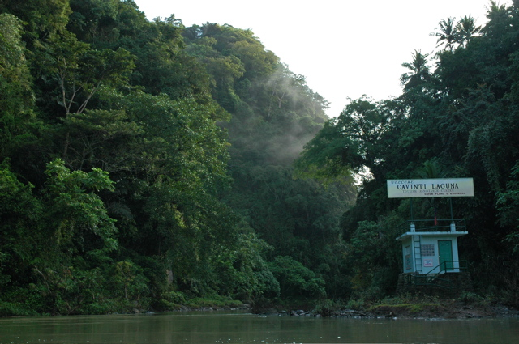
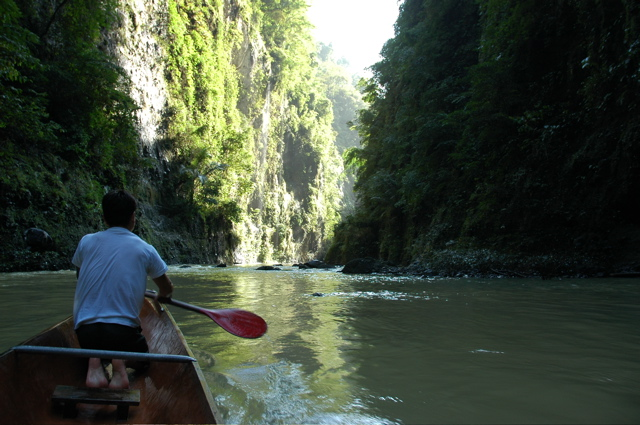
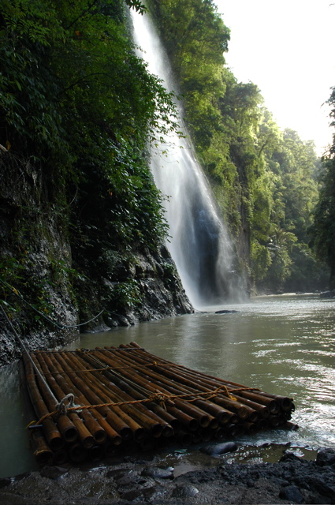

Der Weg nach Pagsanjan hat sich als relativ anstrengend erwiesen. Im Ort selbst ist jeder mit einem Hotelbetreiber verwandt, weshalb wir viele verschiedene Gründe hören konnten, weshalb die Unterkunft, die wir uns ausgesucht hatten, nicht gut wäre. Wir waren die einzigen Gäste. Dafür lag das Hotel direkt am Fluss und war mit einem netten Garten ausgestattet. Im zugehörigen Restaurants gab es nur weder Cola, Bier noch Chicken, sondern nur Eistee und Sandwiches.
Die Bootstour am nächsten Morgen hat sich allerdings wirklich gelohnt. Eine Stunde ging es in einem Einbaum durch eine schmale, steile Schlucht, deren Hänge wild von Urwald bewachsen und von kleinen Wasserfällen durchzogen sind. Die beiden Ruderer haben uns durch kleine Stromschnellen hoch- und runtergeschleppt. Das Finale bestand im famosen Bamboo Ride: Auf einem Bambusfloß wurden wir ein paar Meter weit, uninformiert und voll bekleidet genau unter einen Wasserfall geschippert.
  
Mit nassen Klamotten haben wir anschließend den Weg nach Mindoro zum Big La Laguna Beach angetreten. Dabei sind wir in den Genuss gekommen, jedes nur erdenkliche öffentliche Verkehrsmittel benutzen zu können: Tricycle, Jeepney, Bus und Boot.